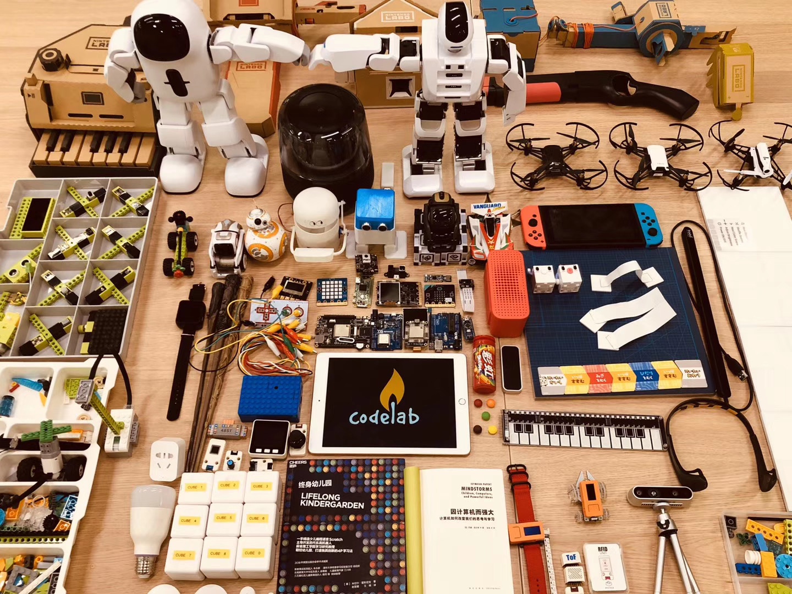

CodeLab Adapter¶
Turn the world into your playground!

是什么？¶
CodeLab Adapter 是一个由 Python 构建的软件(构建在消息之上(Everything Is a Message))， 致力于连接万物，无论是软件还是硬件，无论是 AI、开源硬件、现实世界的物体、还是虚拟世界的动画角色，接入 CodeLab Adapter，皆可彼此互动。
"连接能力" 和 "可扩展性" 是它的主要特色。
在 CodeLab Adapter 驱动的环境里，通过使用 Scratch 或 Python 编程，你可以与万物沟通: 你可以在朋友生日那天，在 Ta 进门的一刻，将手中的魔杖一挥，在空中划一个字母 L 的轨迹，瞬间，点亮房间里五彩的灯光。
具体请看下面两个演示案例：
在上方视频中, 我们做了一场魔法烟花秀: 请看视频左侧，当挥动手中的魔杖实施第一个魔法，时间被冻结，视频右侧烟花静止在空中；实施第二个魔法，将烟花"解冻"; 实施第三个魔法-- 百花齐放。 Adapter 负责将烟花(虚拟)与魔杖(实物)连接在一起，用户在一个创作平台中即可同时操控两者，演绎自己编写的故事。
上方第二个视频演示了如何构建一个 理解 你当前处境的 AI，当你正在阅读时，AI 将为你把灯打开；当你合上书，AI 将为你把灯关掉，让你沉浸在黑暗中思考。 Adapter 负责接入外部 AI 与现实空间内的智能灯具，辅助你在创作平台中通过编程控制他们。
下面请看案例集锦视频，更多的在这里。
能做什么？¶
CodeLab Adapter 的典型用途包括:
- 扩展 Scratch 的能力（比 Scratch Link 更强大）
为它接入 AI、IoT、开源硬件、始就玩起来实物、虚拟角色...使Scratch成为酷上加酷的创作平台 - Python 入门
Adapter 由 Python 构建，对 Scratch 的增强也是通过使用 Python 写的插件实现。因此，Python 入门者通过简单修改现成插件代码为己所用、或编写新的插件代码，即可快速上手玩起来 - 构建可编程空间
- 构建 Dynamic Table
- 扩展在线编程平台(Blockly 等)的能力
特性有哪些？¶
- 开放
- 高度可扩展
- 万物皆消息(EIM, Everything Is a Message)
- RESTful API
- 支持多门编程语言(34+)
- 将 Scratch 和 Python 视为一等公民